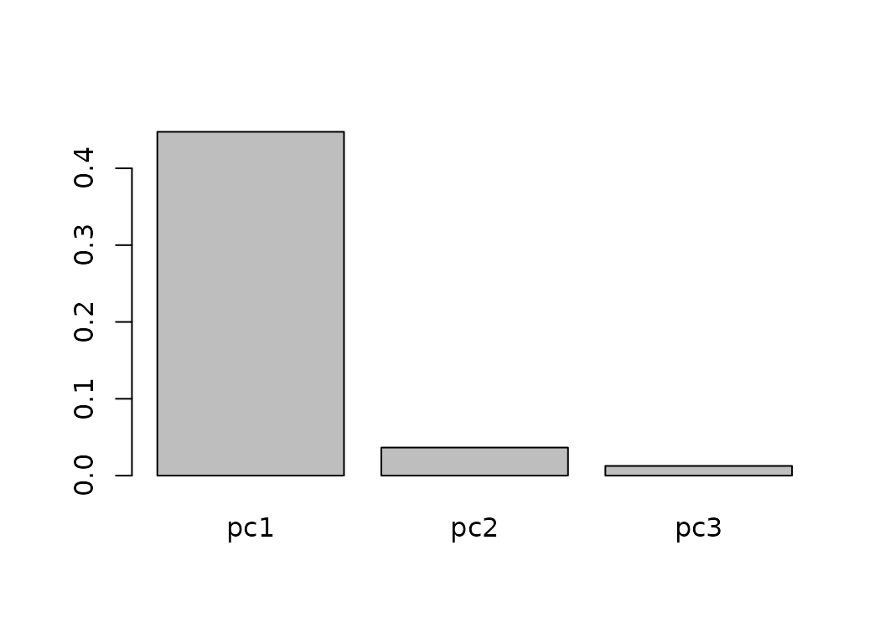

Working with log-ratio coordinates in coda.base
Marc Comas-Cufí
2019-06-10
coordinates.RmdIn this vignette we show how to define log-ratio coordinates using coda.base package and its function coordinates with parameters X, a composition, and basis, defining the independent log-contrasts for building the coordinates.
In this vignette we work with a subcomposition of the results obtained in different regions of Catalonia in 2017’s parliament elections:
library(coda.base)
# By default basis is not shown, in this vignette we turn on basis showing.
options('coda.base.basis' = TRUE)
data('catalan_elections_2017')
X = parliament2017[,c('erc','jxcat','psc','cs')]
Defining log-ratio coordinates with coda.base
The additive logratio (alr) coordinates
The alr coordinates are accessible by setting parameter basis='alr' or by using the building function alr_basis.
The easiest way to define an alr-coordinates is to set basis='alr'.
H1.alr = coordinates(X, basis = 'alr')
head(H1.alr)
#> alr1 alr2 alr3
#> 1 0.23864536 0.446503630 -0.7201917
#> 2 -0.10388120 0.216858085 -1.0473730
#> 3 0.36723896 0.542010167 -0.5320675
#> 4 0.53209369 0.798479995 -0.4799141
#> 5 0.54918649 0.477309280 -0.1028807
#> 6 -0.09742133 0.002856425 -0.6858265
#> Basis:
#> alr1 alr2 alr3
#> P1 1 0 0
#> P2 0 1 0
#> P3 0 0 1
#> P4 -1 -1 -1It defines an alr-coordinates were the first parts are used for the numerator of the log-quotient and the last part for the denominator.
The basis can be reproduced using the function alr_basis:
alr_basis(dim = 4)
#> [,1] [,2] [,3]
#> [1,] 1 0 0
#> [2,] 0 1 0
#> [3,] 0 0 1
#> [4,] -1 -1 -1Function alr_basis allows to define other alr-coordinates by defining the numerator and the denominator.
B.alr = alr_basis(dim = 4, numerator = c(4,2,3), denominator = 1)
B.alr
#> [,1] [,2] [,3]
#> [1,] -1 -1 -1
#> [2,] 0 1 0
#> [3,] 0 0 1
#> [4,] 1 0 0The log-contrast matrix defining the basis can be used in basis parameter:
H2.alr = coordinates(X, basis = B.alr)
head(H2.alr)
#> x1 x2 x3
#> 1 -0.23864536 0.20785827 -0.9588371
#> 2 0.10388120 0.32073928 -0.9434918
#> 3 -0.36723896 0.17477121 -0.8993065
#> 4 -0.53209369 0.26638630 -1.0120078
#> 5 -0.54918649 -0.07187721 -0.6520672
#> 6 0.09742133 0.10027776 -0.5884051
#> Basis:
#> x1 x2 x3
#> P1 -1 -1 -1
#> P2 0 1 0
#> P3 0 0 1
#> P4 1 0 0The centered logratio (clr) coordinates
Building centred log-ratio coordinates can be accomplished by setting parameter basis=TRUE:
H.clr = coordinates(X, basis = 'clr')
head(H.clr, basis = TRUE)
#> clr1 clr2 clr3 clr4
#> 1 0.24740605 0.4552643 -0.7114311 0.008760689
#> 2 0.12971783 0.4504571 -0.8137740 0.233599031
#> 3 0.27294355 0.4477148 -0.6263629 -0.094295406
#> 4 0.31942879 0.5858151 -0.6925790 -0.212664904
#> 5 0.31828271 0.2464055 -0.3337844 -0.230903777
#> 6 0.09767651 0.1979543 -0.4907286 0.195097842
#> Basis:
#> clr1 clr2 clr3 clr4
#> P1 0.75 -0.25 -0.25 -0.25
#> P2 -0.25 0.75 -0.25 -0.25
#> P3 -0.25 -0.25 0.75 -0.25
#> P4 -0.25 -0.25 -0.25 0.75The isometric logratio (ilr) coordinates
coda.base allows to define a wide variety of ilr coordinates: principal components (pc) coordinates, specific user balances coordinates, principal balances (pb) coordinates, balanced coordinates (default’s CoDaPack’s coordinates).
The default ilr coordinates used by coda.base are accessible by simply calling function coordinates without parameters.
H1.ilr = coordinates(X)
head(H1.ilr)
#> ilr1 ilr2 ilr3
#> 1 -0.14697799 0.8677450 -0.01011597
#> 2 -0.22679692 0.9012991 -0.26973693
#> 3 -0.12358191 0.8056307 0.10888296
#> 4 -0.18836356 0.9350526 0.24556428
#> 5 0.05082486 0.5030669 0.26662472
#> 6 -0.07090708 0.5213690 -0.22527958
#> Basis:
#> ilr1 ilr2 ilr3
#> P1 0.7071068 0.4082483 0.2886751
#> P2 -0.7071068 0.4082483 0.2886751
#> P3 0.0000000 -0.8164966 0.2886751
#> P4 0.0000000 0.0000000 -0.8660254Parameter basis is set to ilr by default:
all.equal( coordinates(X, basis = 'ilr'),
H1.ilr )
#> [1] TRUEOther easily accessible coordinate is the pc coordinates. pc coordinates define the first coordinate as the log-contrast with highest variance, the second the one independent from the first and with highest variance and so on:
H2.ilr = coordinates(X, basis = 'pc')
head(H2.ilr)
#> pc1 pc2 pc3
#> 1 0.6787536 0.35694598 -0.4319368
#> 2 0.5581520 0.57775877 -0.5396259
#> 3 0.7013616 0.25302877 -0.3467523
#> 4 0.8973701 0.25915667 -0.3125234
#> 5 0.5362270 -0.05527103 -0.1901418
#> 6 0.2676101 0.32802497 -0.3852126
#> Basis:
#> pc1 pc2 pc3
#> P1 0.3469512 -0.5978990 -0.5216720
#> P2 0.6300769 0.4877904 0.3392104
#> P3 -0.4368610 -0.3913286 0.6371926
#> P4 -0.5401671 0.5014372 -0.4547309
barplot(apply(H2.ilr, 2, var))
The pb coordinates are similar to pc coordinates but with the restriction that the log contrast are balances
H3.ilr = coordinates(X, basis = 'pb')
head(H3.ilr)
#> pb1 pb2 pb3
#> 1 -0.7026704 -0.14697799 -0.50925247
#> 2 -0.5801749 -0.22679692 -0.74060456
#> 3 -0.7206583 -0.12358191 -0.37622854
#> 4 -0.9052439 -0.18836356 -0.33935049
#> 5 -0.5646882 0.05082486 -0.07274761
#> 6 -0.2956308 -0.07090708 -0.48495254
#> Basis:
#> pb1 pb2 pb3
#> P1 -0.5 0.7071068 0.0000000
#> P2 -0.5 -0.7071068 0.0000000
#> P3 0.5 0.0000000 0.7071068
#> P4 0.5 0.0000000 -0.7071068
barplot(apply(H3.ilr, 2, var))
Finally, coda.base allows to define the default CoDaPack basis which consists in defining well balanced balances, i.e. equal number of branches in each balance.
H4.ilr = coordinates(X, basis = 'cdp')
head(H4.ilr)
#> cdp1 cdp2 cdp3
#> 1 0.7026704 -0.14697799 -0.50925247
#> 2 0.5801749 -0.22679692 -0.74060456
#> 3 0.7206583 -0.12358191 -0.37622854
#> 4 0.9052439 -0.18836356 -0.33935049
#> 5 0.5646882 0.05082486 -0.07274761
#> 6 0.2956308 -0.07090708 -0.48495254
#> Basis:
#> cdp1 cdp2 cdp3
#> P1 0.5 0.7071068 0.0000000
#> P2 0.5 -0.7071068 0.0000000
#> P3 -0.5 0.0000000 0.7071068
#> P4 -0.5 0.0000000 -0.7071068Defining coordinates manually
We can define the coordinates directly by providing the log-contrast matrix.
B = matrix(c(1,-1,2,0,
1,0,-0.5,-0.5,
-0.5,0.5,0,0), ncol = 3)
H1.man = coordinates(X, basis = B)
head(H1.man)
#> x1 x2 x3
#> 1 15.45379 0.5987412 0.10392914
#> 2 17.02629 0.4198053 0.16036964
#> 3 17.44436 0.6332727 0.08738560
#> 4 13.77042 0.7720507 0.13319315
#> 5 11.62718 0.6006268 -0.03593861
#> 6 18.10523 0.2454919 0.05013888
#> Basis:
#> x1 x2 x3
#> P1 1 1.0 -0.5
#> P2 -1 0.0 0.5
#> P3 2 -0.5 0.0
#> P4 0 -0.5 0.0We can also define balances using formula numerator~denominator:
B.man = sbp_basis(b1 = erc~jxcat,
b2 = psc~cs,
b3 = erc+jxcat~psc+cs,
data=X)
H2.man = coordinates(X, basis = B.man)
head(H2.man)With sbp_basis we do not need to define neither a basis nor a system generator
B = sbp_basis(b1 = erc+jxcat~psc+cs,
data=X)
#> Warning in sbp_basis(b1 = erc + jxcat ~ psc + cs, data = X): Given
#> partition is not a basis
H3.man = coordinates(X, basis = B)
head(H3.man)
#> x1
#> 1 0.7026704
#> 2 0.5801749
#> 3 0.7206583
#> 4 0.9052439
#> 5 0.5646882
#> 6 0.2956308
#> Basis:
#> x1
#> P1 0.5
#> P2 0.5
#> P3 -0.5
#> P4 -0.5or
B = sbp_basis(b1 = erc~jxcat+psc~cs,
b2 = jxcat~erc+psc+cs,
b3 = psc~erc+jxcat+cs,
b4 = cs~erc+jxcat+psc,
data=X)
#> Warning in sbp_basis(b1 = erc ~ jxcat + psc ~ cs, b2 = jxcat ~ erc + psc
#> + : Given basis is not orthogonal
H4.man = coordinates(X, basis = B)
head(H4.man)
#> x1 x2 x3 x4
#> 1 -0.01011597 0.5256940 -0.8214898 0.01011597
#> 2 -0.26973693 0.5201431 -0.9396653 0.26973693
#> 3 0.10888296 0.5169765 -0.7232616 -0.10888296
#> 4 0.24556428 0.6764410 -0.7997213 -0.24556428
#> 5 0.26662472 0.2845246 -0.3854211 -0.26662472
#> 6 -0.22527958 0.2285779 -0.5666446 0.22527958
#> Basis:
#> x1 x2 x3 x4
#> P1 0.2886751 -0.2886751 -0.2886751 -0.2886751
#> P2 0.2886751 0.8660254 -0.2886751 -0.2886751
#> P3 0.2886751 -0.2886751 0.8660254 -0.2886751
#> P4 -0.8660254 -0.2886751 -0.2886751 0.8660254We can also define sequential binary partition using a matrix.
P = matrix(c(1, 1,-1,-1,
1,-1, 0, 0,
0, 0, 1,-1), ncol= 3)
B = sbp_basis(P)
H5.man = coordinates(X, basis = B)
head(H5.man)
#> x1 x2 x3
#> 1 0.7026704 -0.14697799 -0.50925247
#> 2 0.5801749 -0.22679692 -0.74060456
#> 3 0.7206583 -0.12358191 -0.37622854
#> 4 0.9052439 -0.18836356 -0.33935049
#> 5 0.5646882 0.05082486 -0.07274761
#> 6 0.2956308 -0.07090708 -0.48495254
#> Basis:
#> x1 x2 x3
#> P1 0.5 0.7071068 0.0000000
#> P2 0.5 -0.7071068 0.0000000
#> P3 -0.5 0.0000000 0.7071068
#> P4 -0.5 0.0000000 -0.7071068